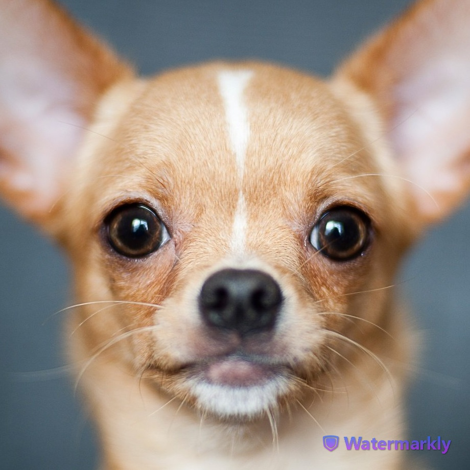
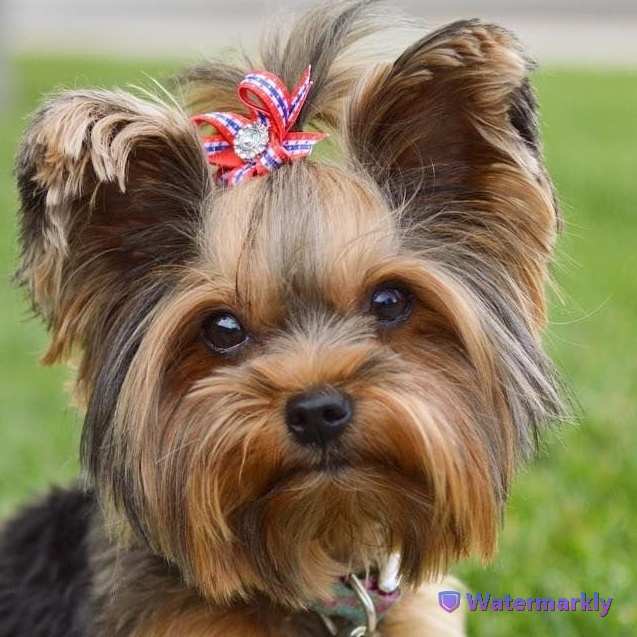
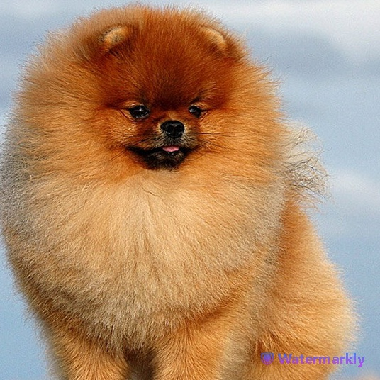
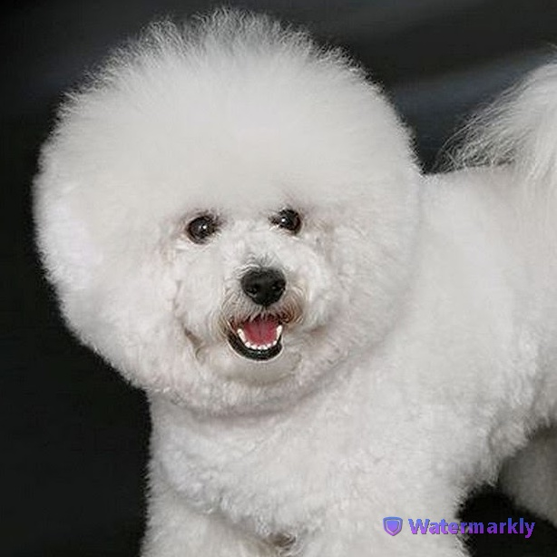
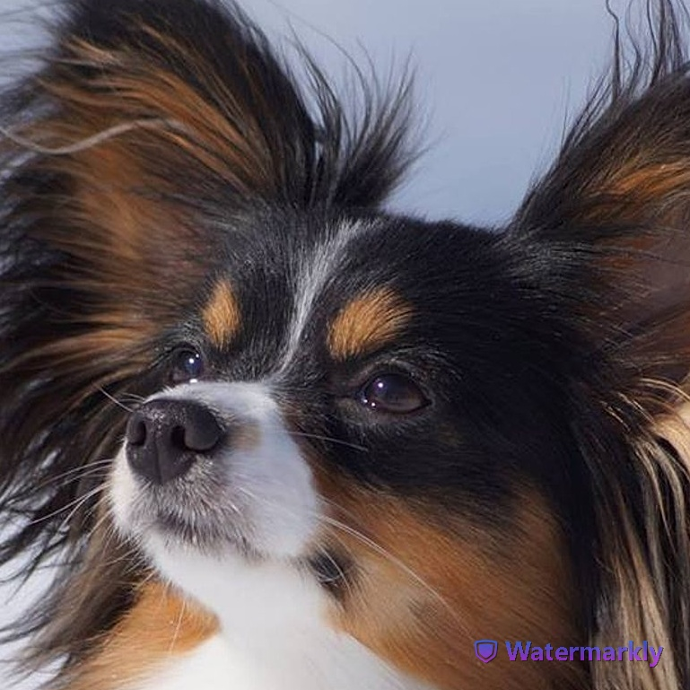
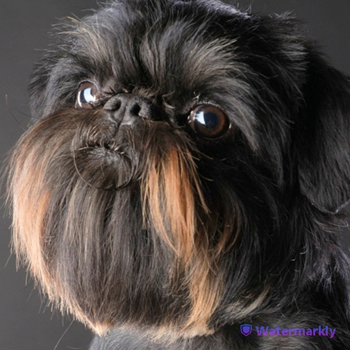
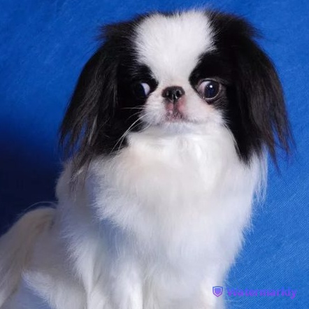
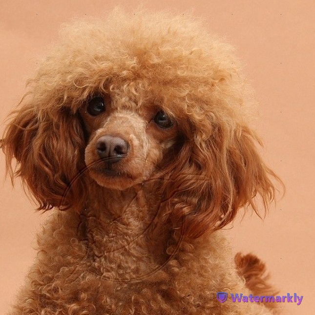
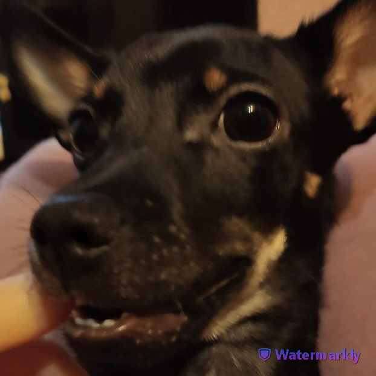
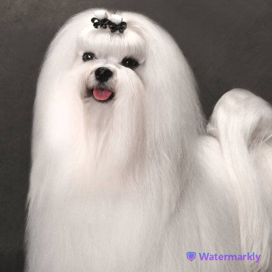

В городских квартирах часто заводят именно маленьких собак. Основная причина — в компактности питомца, чей быт организовать гораздо проще, чем для крупного сородича. К тому же миниатюрная собачка обезоруживает своим очарованием. Однако небольшой размер и обаятельная мордашка обманчивы: такие питомцы обладают особым темпераментом, манерой поведения, неиссякаемой энергией и сильными защитными инстинктами. В нашей статье мы расскажем о породах маленьких собак и их особенностях, которые следует учесть на этапе выбора.
Плюсы и минусы маленьких собак:
Плюсы:
- возможность обустроить место для питомца даже в небольшой квартире благодаря его размеру;
- более бюджетное содержание: они меньше едят, а для ухода потребуют меньше специализированной косметики;
- питомца можно брать с собой в поездку, по делам или на встречи с друзьями в кафе;
- живут дольше по сравнению с крупными породами.
Минусы:
- хрупкое телосложение и предрасположенность к травмам;
- собакам некоторых пород нужны длительные прогулки и приличные физические нагрузки, наряду с крупными собаками;
- суетливы и звонкоголосы при отсутствии должного воспитания и дрессировки;
- бывают агрессивными, что напрямую зависит от их воспитания и условий содержания.
Топ 10 маленьких собак:
1. Чихуахуа
Cамолюбивая, преданная, обидчивая и очень ревнивая собака. Не терпит одиночества. По типу шерсти чихуахуа делятся на короткошерстных и длинношерстных, последним потребуется более тщательный уход. Не нуждается в длительных прогулках, а в плохую погоду может и вовсе без них обойтись.
2. Йоркширский терьер
Превосходная собака, в характере которой смелость, резвость, выносливость сочетаются с удивительной деликатностью, интеллигентностью и сообразительностью. Отличный друг для всех членов семьи, но хозяином считает одного, кому и предан беззаветно.
3. Померанский шпиц
Компанейский и довольно шумный питомец, бесконечно любящий хозяина. Нуждается в длительных прогулках и ежедневных упражнениях, чтобы расходовать запасы энергии. Не подойдет для начинающих собаководов, а также семьям с маленькими детьми, которые могут его травмировать.
4. Бишон фризе
По своей природе весел, игрив, очень активен, смел, но не агрессивен. Характер у таких собак довольно сложный, но они легко находят общий язык со своими хозяевами и поддаются любой дрессировке. Они прекрасно подходят для жизни в городе и приучаются к лотку, однако всё же нуждаются в регулярных прогулках, так как свежий воздух и активные движения им нужны для хорошего самочувствия.
5. Папильон
Бдительная, дружелюбная, энергичная маленькая собака. Она становится достойными любящим компаньоном. Собака любит принимать участие в семейной жизни и проводить время у человека на коленях!
6. Брюссельский гриффон
Имеет уравновешенную психику и покладистый характер. Очень энергичен на прогулках. Любит побегать и поиграть. В то же время в поездках (в автомобиле, в поезде или в самолете) ведет себя спокойно и деликатно. Гриффоны очень привязчивые и преданные собаки. Стараются находиться всегда рядом с хозяином и чувствуют его настроение. Прекрасно ладят с детьми и хорошо уживаются с другими домашними животными.
7. Японский хин
Имеет дружелюбный характер, это относится к стандартам для такого питомца. Он имеет свои привычки, проявляет верность для всех жителей дома, хорошо находит общий язык с детьми. Однако, если в доме есть малыш, не достигший возраста шести лет, лучше таких животных, как японский хин не заводить.
8. Той-пудель
Этот кудрявый пес — идеальный компаньон для любого человека. Он добрый, общительный, игривый и чрезвычайно преданный своему хозяину. Он любит ласку и объятия и обожает проводить время на диване рядом с хозяином.
9. Русский той-терьер
Чрезвычайно энергичная, активная и игривая собака, очень преданная и ласковая к хозяину. Отлично ладит со всеми окружающими. Обладает достаточно лабильной психикой и подвержена стрессам, поэтому не подходит для содержания рядом с шумными и крикливыми детьми. Собака породы русский той — типичный «звонок».
10. Мальтийская болонка
Мальтезе необыкновенно добродушны и нежны в отношении хозяина и членов его семьи. Особенно ласковы они с детьми. Мальтезе, следует заметить, неспокойно воспринимает незнакомых людей. К другим собакам относятся с лаской и добротой, любят общаться с ними. Здоровье. Наиболее часто регистрируются нарушения зрения, поражения зубов и десен, а также гипогликемия.